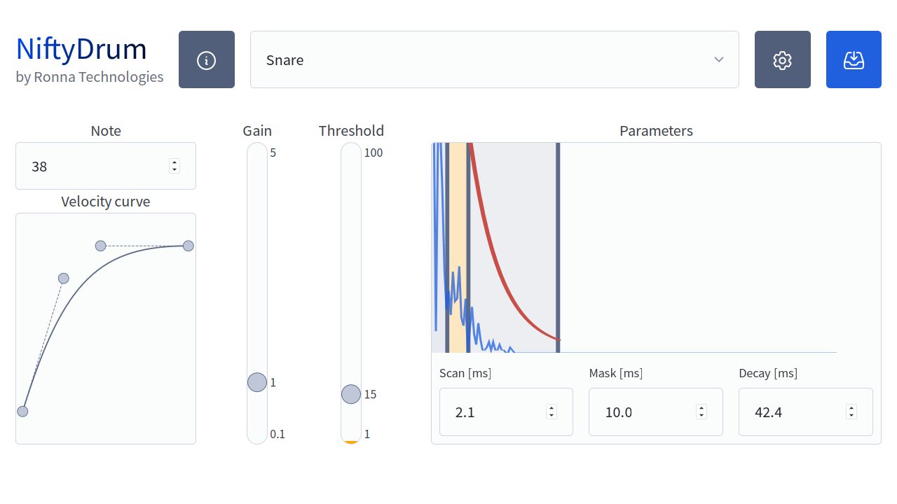
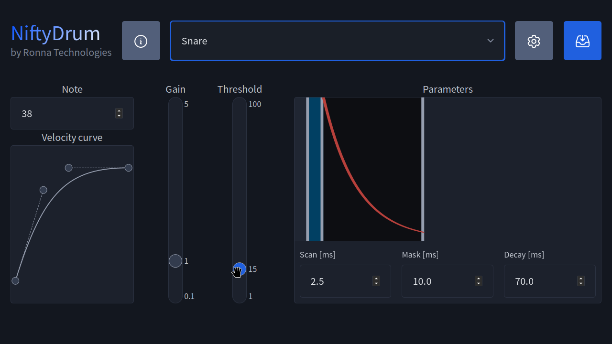
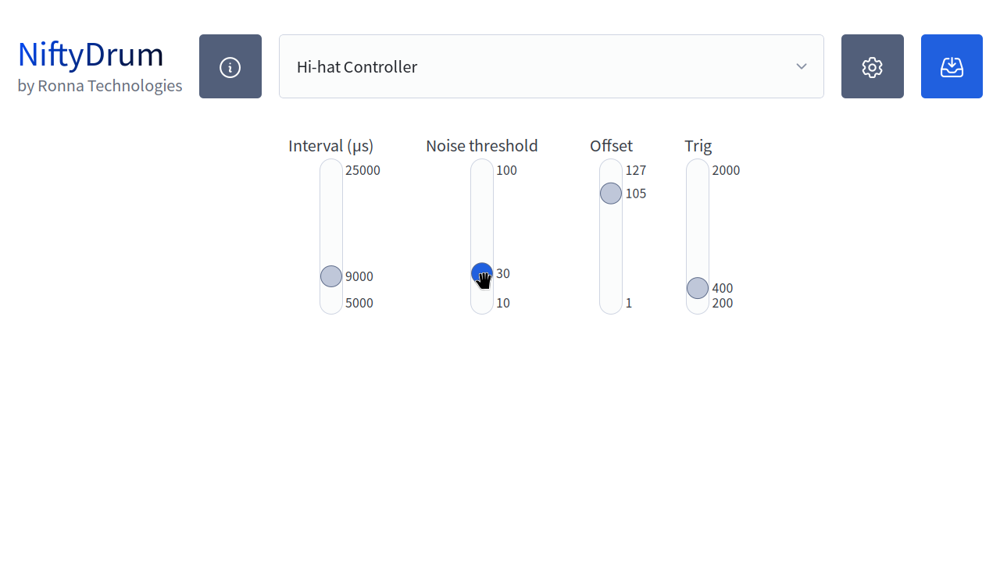
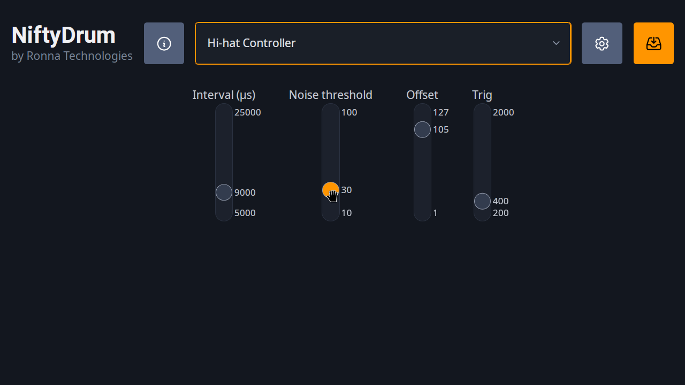

The App¶
Configure NiftyDrum¶
NiftyDrum is fully configurable, allowing you to adjust parameters like scan time, mask time, decay, threshold, etc. To simplify customization, a dedicated desktop application is available, compatible with Windows, Linux, and macOS.
Below are all the different commands the app can send to the board.
General Board Commands¶
| Command | Description |
|---|---|
| Reset | Restart the board in bootloader mode |
| Serial number | Retrieve the board’s unique serial number |
| Version | Retrieve the current firmware version |
| Save current parameters | Persist current settings to the board |
| Load parameters | Load previously saved board parameters |
| Factory reset | Reset all parameters to factory defaults |
Trigger Parameters (Per Trigger, Including Hi-Hat Cymbal)¶
| Parameter | Description |
|---|---|
| Set/get velocity curve | Adjust or retrieve the velocity response curve |
| Set/get threshold | Configure the trigger activation threshold |
| Scan time | Set/get the trigger scan time |
| Mask time | Set or adjust the trigger mask time |
| Decay time | Adjust the decay time of the trigger |
| Gain | Adjust the gain level of the trigger |
| MIDI Note | Assign the MIDI note for the trigger |
Hi-Hat Pedal Parameters¶
| Parameter | Description |
|---|---|
| Update interval | Set the hi-hat pedal update frequency |
| Noise threshold | Ignore pedal changes below this value |
| Pedal offset | Determine if the hi-hat is fully closed |
| Velocity threshold | Set the velocity threshold for foot chick |
How the app works¶
The app simplifies customization by organizing everything logically: instruments are selected via a drop-down, while MIDI notes and velocity curves are managed separately from trigger settings for a cleaner, more efficient setup.
How to install the app¶
he app is available for Windows, macOS, and Linux and can be downloaded directly from the official NiftyDrum.com website. Follow the OS-specific instructions provided on the site.
Windows¶
On Windows, the app is distributed as a .zip file, so no installation is required, simply extract and run it.
Note that, if that's not already done, you will have to install the Microsoft Visual C++ Redistributable package.
Linux¶
For Linux, the app is packaged as a .deb file. You can install it using your preferred package manager or by running the following command in a terminal:
macOS¶
The macOS version of the app is provided as a .zip file. Just extract it and run the application.
If you're using an Apple Silicon Mac, you may be prompted to install Rosetta the first time you launch the app.
Piezo trigger configuration¶
 
Hi-hat pedal configuration¶
 